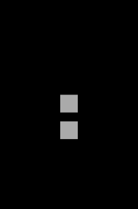

タッチイベント（onpointstart）
- タッチイベントを登録するためには、オブジェクトのonpointstart関数を実装します。
- タッチを有効にするためには、setInteractive(true) としてタッチ自体を有効にする必要があります。
// タッチ可能にする
shape.setInteractive(true);
// タッチイベント登録
shape.onpointstart = function() {
alert('タッチされました');
};
タッチイベント登録（on + pointstart）
onとenterframeの組み合わせの時と同様に複数のメソッドを登録可能で、その内容が登録順に実行されます。
// タッチイベント登録
shape2.on('pointstart', function() {
alert('タッチされました');
});
// タッチイベント登録
shape2.on('pointstart', function() {
shape2.backgroundColor = 'blue';
});
サンプルコード
コードを見る
// グローバルに展開
phina.globalize();
/*
* メインシーン
*/
phina.define("MainScene", {
// 継承
superClass: 'DisplayScene',
// 初期化
init: function() {
// 親クラス初期化
this.superInit();
// 背景色
this.backgroundColor = 'black';
// Shapeを作成してシーンに追加
var shape = Shape().addChildTo(this).setPosition(320, 480);
// タッチ可能にする
shape.setInteractive(true);
// タッチイベント登録
shape.onpointstart = function() {
alert('タッチされました');
};
var shape2 = Shape().addChildTo(this).setPosition(320, 600);
// タッチ可能にする
shape2.setInteractive(true);
// タッチイベント登録
shape2.on('pointstart', function() {
alert('タッチされました');
});
// タッチイベント登録
shape2.on('pointstart', function() {
shape2.backgroundColor = 'blue';
});
},
});
/*
* メイン処理
*/
phina.main(function() {
// アプリケーションを生成
var app = GameApp({
// MainScene から開始
startLabel: 'main',
});
// fps表示
//app.enableStats();
// 実行
app.run();
});